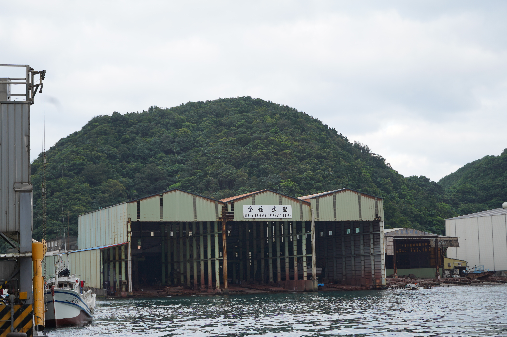
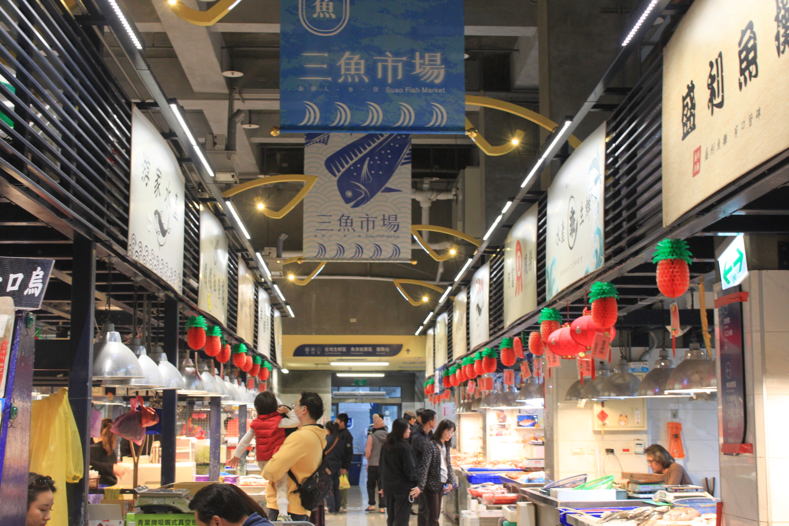

漁生
Home
Story Map
About Us
☰
漁生
The Story Of NANFANG'AO
討海人的命，是海給的...
一代又一代從南方澳出海，
在風浪之間討生活，
也把一生留在這片海。
⊕
Chapter 0 港邊記憶
⊕
Chapter 1 漁民篇

⊕
Chapter 2 職人篇

⊕
Chapter 3 食物篇
✕
CHAPTER 0
港邊記憶
南方澳聚落誌
深入小節
Subchapters / 包含小節
進入完整篇章閱讀
→
✕
全 篇 章 架 構
CONTENT DIRECTORY
Chapter 0 · 港邊記憶
→
· 0-1 Introduction
Chapter 1 · 漁民篇
→
· 1-1 遠洋漁業
· 1-2 近海漁業
· 1-3 外籍漁工
Chapter 2 · 職人篇
→
· 2-1 三鋼鐵工廠
· 2-2 龍德造船廠
· 2-3 全福造船廠
Chapter 3 · 食物篇
→
· 3-1 海派生活
· 3-2 大鯖魚夢工廠
· 3-3 魚市場